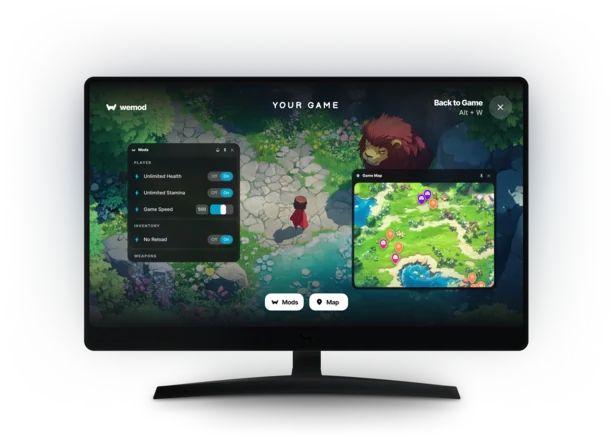
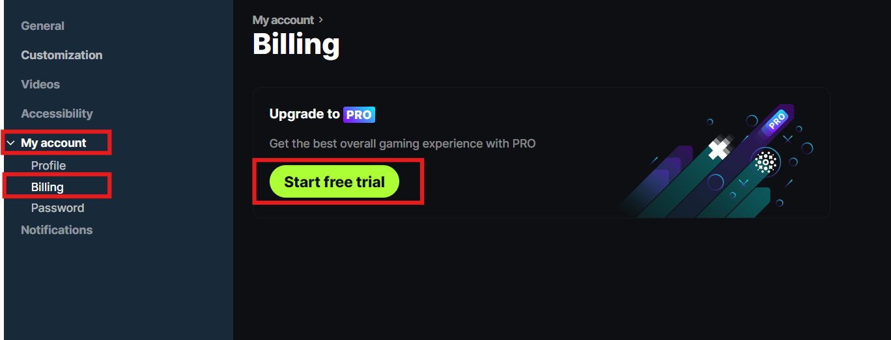

WeMod 完全指南：从安装到玩懂，单机游戏从此不卡关
写给第一次接触单机游戏增强工具的新手，用生活化类比讲清 WeMod 是干嘛的，手把手带装、教你第一次跑通悬浮窗，再介绍三个值得先玩的功能和三个高频坑。
这篇能带你从完全不懂到用起来，不需要任何基础——跟着点，五分钟就能把游戏跑起来，顺便开无限生命。
它到底是干嘛的：一个生活化类比
想象你在玩一款解谜游戏，卡关了，想跳过某个谜题但又不想直接看攻略剧透后面的剧情；或者你刷某个稀有道具刷了三十遍，实在不想再来一遍。WeMod 就是一个装在你电脑上的"游戏作弊小助手"——它不会碰你的游戏存档，也不会让游戏变味到没法玩，只是在你卡壳的时候，悄悄帮你调一下数值、加速一下、或者把你传送过去。
它的核心逻辑很简单：打开应用，它自动扫描你电脑里装了哪些单机游戏，你挑一个，启动游戏，游戏运行中按一下 Alt+W，弹出一个悬浮小窗，鼠标点一下就能开关各种增强项。全程不用退出游戏，也不用自己到处找那种带病毒风险的修改器文件。
这个应用最早叫 WeMod，2025 年底更名为 Wand，但老用户还是习惯叫它 WeMod，它的官网上新旧版本的说明都在，大家都按旧名字喊。

五分钟上手：从下载安装到第一次跑通
好，现在你决定试一下。最短路径一共四步，跟着做不会错：
第一步：下载安装。 从官方下载拿安装包，双击运行。安装过程就是一路点"下一步"，几分钟就好。装完打开，它会弹出登录界面——不想注册也行，游客模式能先用，但登录账号才能用上云同步（地图标记、剪辑这些会跟你的账号走）。
第二步：等它扫描游戏。 打开之后，左侧面板会开始慢慢列出你电脑里已经安装的单机游戏。如果等了一会儿你的游戏没出现，点一下右上角的添加按钮手动指一下游戏的可执行文件。
第三步：选一个游戏，启动。 在左侧列表里点你想玩的那一个，进入游戏详情页，点"开始游戏"按钮。WeMod 会帮你把游戏拉起来，自己退到后台等。
第四步：呼出悬浮窗，开功能。 游戏跑起来之后，按键盘上的 Alt+W 三个键一起按，屏幕中间会弹出一个小窗口，里面列着这款游戏支持的所有增强项。鼠标移过去点一下那个开关图标，开了就行。再按一下 Alt+W 把窗口藏回去，继续玩。
到这一步你已经跑通了。无限生命开起来，刚才打不过的 boss 现在随便你输出。
上手后先玩这三个功能
第一次用别贪多，先把这三个摸透，它们是 WeMod 区别于零散修改器的招牌。
交互地图：把收集品全标在上面
打开一个支持地图的游戏，在 WeMod 应用里找到地图标签——不是所有游戏都有，详情页能看到。地图上密密麻麻标满了游戏里的收集品位置、任务点、秘密宝箱，甚至有些游戏支持实时定位（你的角色在哪，地图上就有个小点跟着动）。
新手村刚出来的时候实时定位不会立刻工作，得先过开场序章，这是正常的，别慌。
地图渲染吃一点显卡资源，标记全打开时会卡——在图例面板里把你暂时不关心的类别整组关掉，清爽很多。找不到某个标记？筛选器里可以把"已找到"的都藏起来，视图里只剩你还没收集的。
自定义标记：把地图变成你的私人攻略本
内置标记是通用的，但每个人都有自己的小目标——比如你看到一个稀有刷新点，想记下来回头刷；或者某个岔路口你选了一条，想标记另一条之后来。这时自定义标记就派上用场了。
在地图页面点"Add Custom Pin"，给你的标记起个名字、写点备注、选个颜色，保存。之后这个标记就归你自己看，而且会跟账号云端同步——换台电脑接着玩，标记还在。
找到东西了？点一下标记选"Found"，它就变成淡显的已收集状态，筛选器里还能把它们藏起来。
高光剪辑：按一下就留住刚才那 15 秒
打 boss 打出一个天秀的连招，或者关键时刻触发了某个修改效果，想把这一刻存下来。在游戏里按 Ctrl + \（反斜杠键），WeMod 会把刚才的 15 秒到 2 分钟画面保存下来，自动存成一段小视频。Pro 版还能让修改效果激活时自动触发录制，不用你手忙脚乱。
剪辑文件存在本地，随时可以回看，也可以上传分享。云备份开启之后，这些高光片段还会在地图上留下一个小标记——名字叫视频标记，以后翻地图的时候看到这个标记，点一下就能跳到当时的名场面。
小白的三个常见疑问
从WeMod文档里挑了三个问得最多的，提前帮你把坑填上。
1. 联机游戏能用吗？
绝对不行。 WeMod 只支持单机 PC 游戏。带反作弊系统的游戏（比如很多大型联网 FPS）根本连不上。如果你在联机对战里用了任何修改，很可能触发账号处罚，封号得不偿失。老老实实在单机剧情里玩增强。
2. 试用期忘了取消被扣款怎么办？
这是官方帮助中心阅读量最高的文章之一——别慌，可以退款。官方专门为这种情况设了退款通道，通过帮助中心的"要求退款"入口发起，或者直接联系官方支持说明"忘记取消试用被自动扣款"的情况，成功率很高。
预防性的小建议：开试用当天就在手机上设一个第二天的提醒，3 天试用期很快就过去了。预授权冻结不是扣款，通常 7 天内会自动消失，别被短信吓着。

3. 地图打不开 / 定位不显示怎么办？
三个典型问题，按顺序排查：
- 定位不显示：先确认这款游戏支持实时定位（详情页有定位标签才说明支持）；然后跳过开场序章，新手村阶段定位不工作是正常的；最后把游戏和应用都重启一次。
- 地图卡顿：多半是标记开太多了——图例面板里整组关掉不关心的类别，或者降低地图画质。
- 地图打不开：先确认游戏有地图标签；然后检查应用和游戏是否处于已连接状态；悬浮窗和应用内的地图页两条路都试一下。
地图和训练器修改是两套独立的功能，地图打不开不影响你开无限生命，别因为地图卡就以为整个 WeMod 坏了。
接下来可以往哪走？
好，现在你已经能流畅地用 WeMod 开修改、看地图、存高光了。下一步如果想玩得更深，可以试试一键传送功能（在地图上点一下就能把角色瞬移过去，比你自己跑省时间），或者把你常用的几组修改配置保存成收藏集，下次启动直接一键载入。
单机游戏的乐趣从来不只是"打赢"，有时候用 WeMod 换一种节奏重新通关一遍，反而能发现之前错过的细节。关于它的详细中文资料，GitHub、Gitee、GitCode 上都能找到对应仓库的完整文档。玩得开心就行。